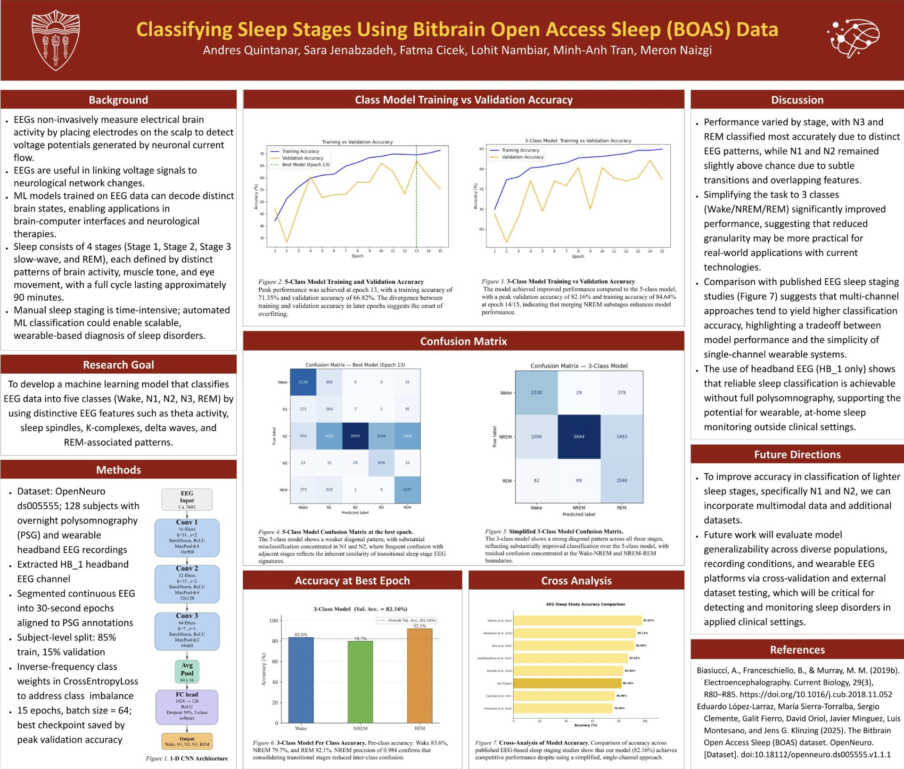
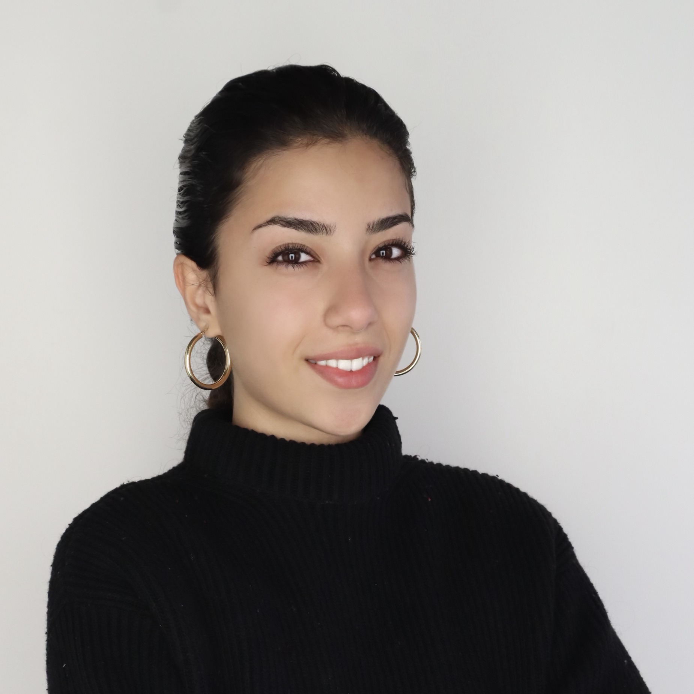

Spiking the network
Built and tuned integrate-and-fire models of central pattern generators in MATLAB, then ran a 6×6 parameter sweep over inhibitory weights for a robustness analysis feeding into a Moore Lab publication (Lu et al., in prep).
I build software and hardware that read neural signals, from spiking-network models to real-time EEG decoders, and the lab electronics in between.
Currently teaching circuits to map a rhythm: the brain kind, modeled via frequency-band analysis, and the breadboard kind, synchronizing custom front-ends for 10.2 Hz detection.
Built and tuned integrate-and-fire models of central pattern generators in MATLAB, then ran a 6×6 parameter sweep over inhibitory weights for a robustness analysis feeding into a Moore Lab publication (Lu et al., in prep).
A real-time bilateral whisker tracker reading a FLIR camera with a NI USB-6003 DAQ in the loop, built for closed-loop experiments where latency actually matters.
Drove a servo rig to physically replicate a 6.4 Hz CPG oscillation, taking the model off the screen and validating the dynamics in hardware.
An ML pipeline for sleep-stage classification from EEG, covering feature engineering through evaluation. Presented as a poster at the California Neurotech Conference, 2026.

Working on central-pattern-generator dynamics and integrate-and-fire modeling under PI Jeffrey Moore, contributing analysis toward an in-progress publication on rhythmic neural circuits.
Helping build a visible student pipeline into neurotech: projects, talks, and a growing community for people who want to work where neuroscience meets engineering.
Concurrent degrees through USC Viterbi's Progressive Degree Program, with a graduate focus on machine learning.
A fashion editorial brand I run end to end, built on a content pipeline I designed myself: generation, captioning through an API, and automated scheduling. Equal parts art direction and engineering, which is exactly the overlap I like working in.
Realism work in charcoal. The long-attention, high-precision kind of practice.
Shooting and cutting short pieces. Composition is composition, on a screen or on paper.
Strength and conditioning, logged and progressively loaded. I like things you can measure and push.
Especially in machine learning, software, and anything close to neural signals. Click my email to copy it, or use the links below.
